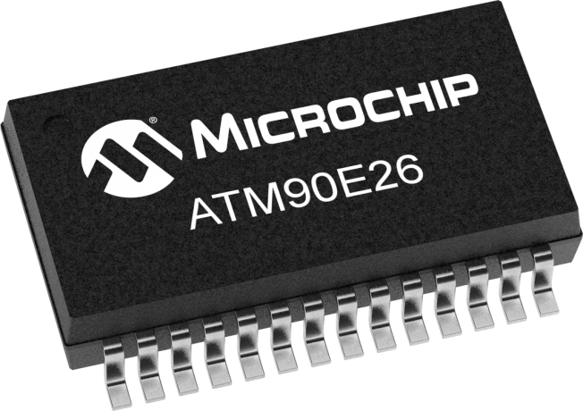
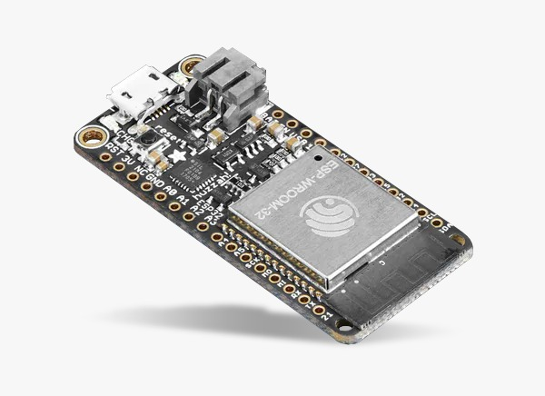
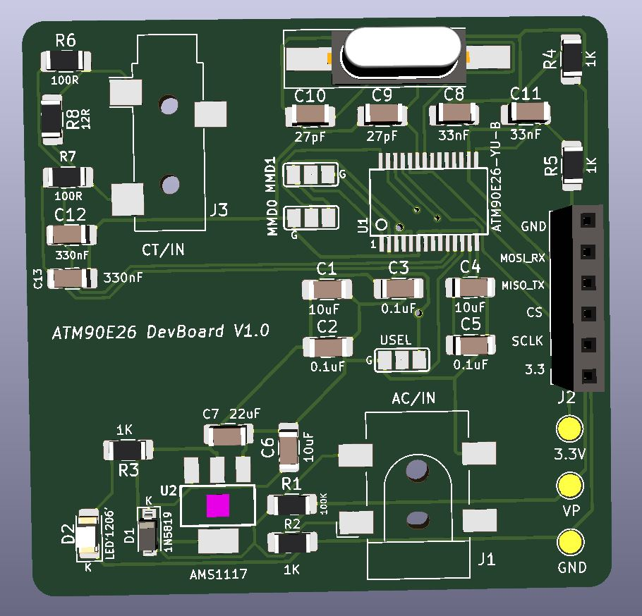
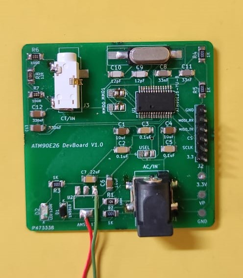
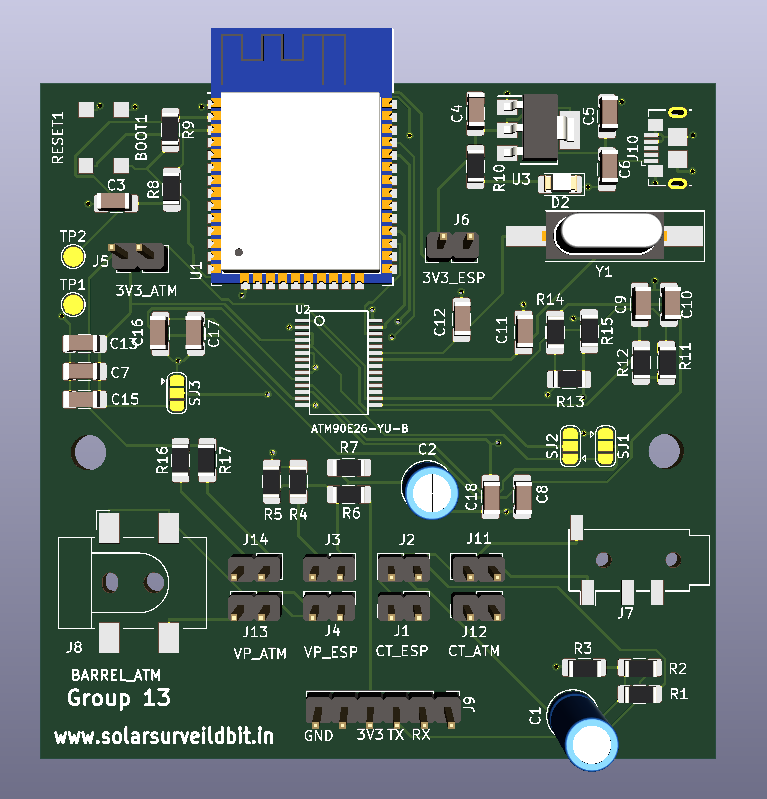
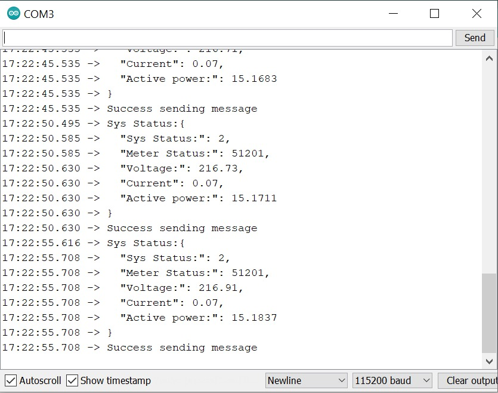

Posted on April 29, 2021
Here we shall look at how we used an ATM90E26 paired with an ESP32 Wifi module for single phase AC monitoring. This setup was designed to be implemented in urban areas taking advantage of the good internet connectivity available here.
The ATM90E26 is a high-performance energy metering device for single-phase two-wire, single-phase three-wire or anti-tampering active and reactive energy meters. With the measurement function, the ATM90E26 can also be used in power instruments which need to measure voltage, current, etc.
The ATM90E26 is capable of communicating with peripheral devices using either SPI or the UART communication. For our use, we shall be using the ATM90E26 in UART mode.
The ATM90E26 has an accuracy of 0.1% for active energy and 0.2% for reactive energy over a dynamic range of 5000:1.
The ATM90E26 will calculate the different AC parameters based on data recieved from two inputs. These shall consist of the input coming from the SCT013 current transformer that is clamped onto the live AC current carrying line, and a 9V AC supply coming from a voltage transformer. The latter shall be used for voltage sampling as well as powering the ATM90E26 board after being downconverted to 3.3V.
ESP32 is a series of low-cost, low-power system on a chip microcontrollers with integrated Wi-Fi and dual-mode Bluetooth. ESP32 is created and developed by Espressif Systems, a Shanghai-based Chinese company, and is manufactured by TSMC using their 40 nm process. It is a successor to the ESP8266 microcontroller.
Once the AC parameters such as current, voltage,energy, and power have been calculated by the ATM90E26, it shall transmit the data to the ESP32 module using UART communication.
The ESP32 shall then transmit this data to the Node-RED broker usning the MQTT protocol over a Wifi network. The time delay with which the user wants the ESP32 to transmit the data can be predefined as per the users needs.
The first iteration of our ATM90E26 + ESP32 Single Phase AC Monitoring system consisted of a PCB designed by us containing only the ATM90E26 chip along with the peripheral connectors.
This board was then paired with an external ESP32 module for transmitting the data. It served as a testbench for us. Once we obtained accurate results from this system, we moved on to creating the second iteration of this system.
 Once we had confirmed the accurate working of our first iteration, we went ahead with the designing of our second iteration. This second iteration would consist of a hybrid board containing both the ATM90E26 na d ESP32 module.
For this we designed a breakout board of the ESP32 in order to efficiently interface, it on the same PCB, with the ATM90E26 module.
We also added a micro USB port to serve as an alternative way of powering the system. The provision to bypass the ATM an use the ESP32 directly for calculating the energy parameters was also added in this board.
This board retained the input ports used for the SCT013 current transformer clamp and 9V AC voltage supply.
 